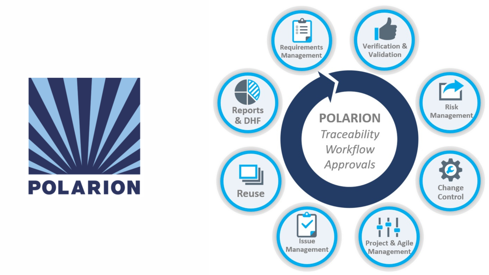
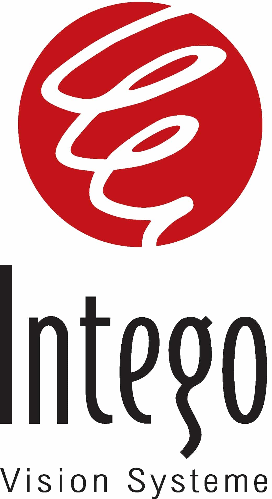
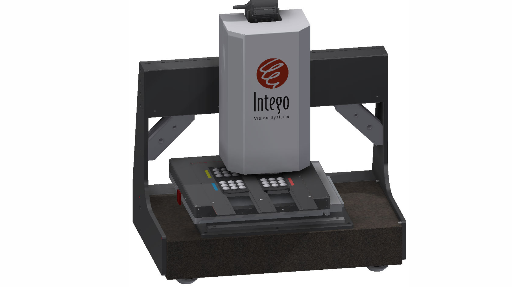

Heute
09/2025
Sales & Customer Service
Peek & CloppenburgWerkstudent (Sales Assistant)
Klicke für Details
- Kundenberatung & Verkauf: Unterstützung bei der Beratung von Kundinnen und Kunden sowie Sicherstellung eines positiven Einkaufserlebnisses im Verkaufshaus.
- Warenpräsentation & Visual Merchandising: Aufbau und Präsentation von Warenflächen sowie Unterstützung bei der ansprechenden Gestaltung der Verkaufsfläche.
- Warenmanagement: Unterstützung bei der Warenverräumung, Sortierung und Pflege des Sortiments auf der Verkaufsfläche.
- Teamarbeit im Verkauf: Zusammenarbeit mit verschiedenen Teams und Einblicke in unterschiedliche Fachbereiche des Verkaufshauses.
09/2024
04/2019

Research and Development
Valeo eAutomotive Germany GmbHWerkstudent (Software- und Prozessmanagement)
Klicke für Details

Tätigkeiten
- Prozessmanagement & Digitalisierung: Unterstützung bei der Standardisierung und Optimierung digitaler Entwicklungsprozesse innerhalb der ALM-Plattform Siemens Polarion zur effizienteren Steuerung von R&D-Projekten.
- Software-Tools & Datenanalyse: Entwicklung von Reports, Skripten und Software-Tools zur Analyse von Entwicklungsdaten sowie zur Vereinfachung von Konfigurations- und Verwaltungsprozessen.
- ALM & Systemadministration: Pflege und Administration zentraler R&D-Tools (ALM-System Polarion), einschließlich Benutzerverwaltung, Workflow-Anpassungen und Bearbeitung von Change Requests.
- Prozessoptimierung: Automatisierung von Daten- und Arbeitsprozessen in Google Sheets mittels Google Apps Script zur Effizienzsteigerung und Reduzierung manueller Arbeitsschritte.
- Schnittstellenmanagement: Unterstützung internationaler Engineering-Teams durch technischen Support, Bearbeitung von KPI- und Report-Anfragen sowie Koordination bei Prozess- und Systemänderungen.
08/2017
05/2017

Computer Vision
Intego GmbHPraktikant (Industrielle Bildverarbeitung)
Klicke für Details

Tätigkeiten
- Programmierung & Softwareentwicklung: Einarbeitung in die Programmiersprache Python sowie Entwicklung erster Skripte zur Analyse und Verarbeitung von Mess- und Bilddaten.
- Bildverarbeitungssysteme: Einarbeitung in die proprietäre grafische Programmierumgebung Inspector sowie in die grundlegenden Methoden der industriellen Bildverarbeitung.
- Versuchs- und Testdurchführung: Unterstützung bei Voruntersuchungen an verschiedenen Prüfteilen sowie Durchführung und Dokumentation von Testreihen zur Analyse von Material- und Oberflächeneigenschaften.
- Technische Dokumentation: Erstellung strukturierter Testberichte und Auswertung von Versuchsergebnissen zur Unterstützung der Entwicklungsabteilung.
- Technische Recherche & Konzeptentwicklung: Unterstützung bei der Recherche und Analyse neuer Prüfmethoden sowie Mitwirkung bei der Entwicklung von Prüfkonzepten für industrielle Bildverarbeitungssysteme.